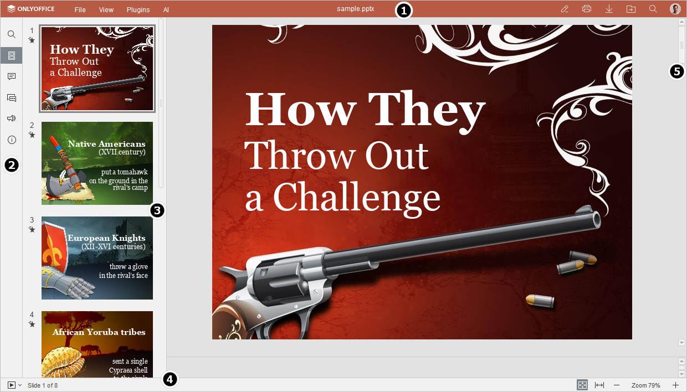

Pregledač prezentacija
Kada otvorite ONLYOFFICE Presentation Editor sa pravima za pregled, možete se slobodno kretati kroz prezentaciju koristeći dostupne alate za pregled.

-
Gornja traka sa alatkama sadrži sledeće kartice i dugmad za brzi pristup:
-
Dostupne kartice: kartica File, kartica View, kartica Plugins, kartica AI.
Kartica View omogućava promenu stila pokazivača. Koristite alat Hand za kretanje po slajdu i alat Select za izbor objekata na slajdu.
-
Dugmad za brzi pristup:
- Edit current file – zatvara režim pregleda i prebacuje u režim uređivanja.
- Print – štampa trenutnu prezentaciju.
- Open file location – u desktop verziji omogućava otvaranje fascikle u kojoj je fajl sačuvan u prozoru File Explorer. U onlajn verziji omogućava otvaranje fascikle modula Documents, u kojoj je fajl sačuvan, u novoj kartici pregledača.
- Download file – preuzima trenutnu prezentaciju na hard disk.
- Search – omogućava pretragu prezentacije po određenoj reči ili simbolu itd.
-
Dostupne kartice: kartica File, kartica View, kartica Plugins, kartica AI.
-
Levi panel sadrži sledeća dugmad:
- – omogućava korišćenje alata Search and Replace,
- – omogućava pregled slajdova i navigaciju kroz njih,
- – omogućava otvaranje panela Comments,
- – (dostupno samo u onlajn verziji) omogućava otvaranje panela Chat,
- – (dostupno samo u onlajn verziji) omogućava kontaktiranje našeg tima za podršku,
- – (dostupno samo u onlajn verziji) omogućava pregled informacija o programu.
- Lista slajdova sadrži sve slajdove prezentacije dostupne za brzi pristup.
- Statusna traka na dnu prozora editora sadrži ikonu Start slideshow, kao i neke navigacione alate: indikator broja slajda i dugmad za uvećanje/smanjenje prikaza. Statusna traka takođe prikazuje određena obaveštenja (kao što su "All changes saved", „Connection is lost“ kada nema veze i editor pokušava ponovo da se poveže itd.).
- Klizač sa desne strane omogućava pomeranje prezentacije nagore i nadole.